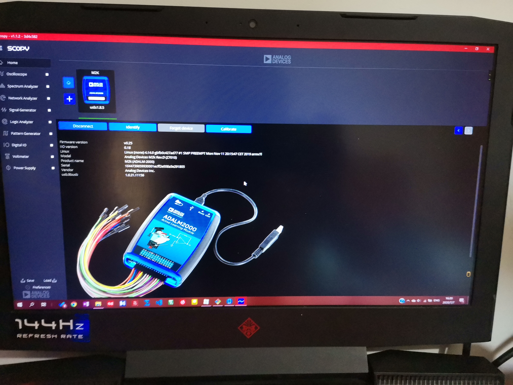

自制智能车的环节已经完成了第一步
我购买了顽皮龙RC遥控车作为基底，选择了KIT版本，是一辆RC遥控车去除了电调与电池，需要自己组装的版本。
这是目前的结果,我完全放弃了车模的外壳与涂装，以方便自己的改装。

车架
车架有两条钢梁作为主要框架，后在此基础上装上塑料配件。整体来说还是足够安全的。加上他的细节不错，四个独立弹簧作为减震。有些美中不足的是它的轮胎 ，显得有些不足，但是可以在后期添加填充物来修改。


车架总体不错，也对得起它的价格。当然这个价格不高，加上是越野车车模与自己组装其车辆的精度不高，这需要我后期在控制方法上进行补偿。比如使用陀螺仪，从而得知车辆的目标偏移，控制舵机进行补偿。
电池
电池我配了一个聚合物电池，可适配7.4V~8V电池。采用8.4V的充电器。

在进行测试时电池电压显示为7.8V。

电机
这个车模自带了一个180波箱电机。但是180指的只是规格，而具体参数商家没有说，也没有在网上查到。仅可以确定是有刷直流电机，可以使用电池直接供电。

后来，我经过了解，发现其黄色的部分是一个变速箱，虽然直接了当的限制了车速但也将电机堵转的可能性降到了最低。
舵机
舵机使用的是车模自带的17克舵机，和电机一样没有具体参数。而通过客服得知可以在电池直接供电下工作，与我之前所知的舵机不同，电池直接供电可能会使得舵机无法工作在最佳状态下。

舵机的排线与一般的排线不同。舵机的排线为3根，分别为橙色信号线、红色正极线、棕褐色负极线。
据网上资料可知舵机一般工作电压为4.8V或6V。控制信号一般为50Hz的PWM波，其占空比一般在5%到10%之间。
接下来就是实际测试了
我一开始使用STM32开发板输出PWM波，然而不论如何都无法控制舵机。因为在家手头没有测试期间，所以得知出现问题的是PWM波还是舵机。
因为开始做项目，我下单了ADI的ADALM2000高级主动学习模块，也就是M2K口袋实验室。我的家中实验室开始了。

M2K十分适合我这种因为疫情困在家的人。要么搞软件，提升基础，要么就自己搭建一个环境。M2K有多种功能，虽然说有着精度不高等问题，但是目前也足够了。
| M2K功能 |
|---|
| 双通道USB数字示波器 |
| 双通道任意函数发生器 |
| 16通道数字逻辑分析仪（兼容3.3V CMOS和1.8V或5V，100MS/s） |
| 16通道模式发生器（3.3V CMOS，100MS/s） |
| 16通道虚拟数字I/O |
| 用于链接多个仪器的两个输入/输出数字触发信号(3.3V CMOS) |
| 单通道电压表（AC、DC、±20V） |
| 网络分析仪 – 电路波特、奈奎斯特、尼克尔斯传输图。范围：1Hz至10MHz |
| 频谱分析仪 – 功率频谱和频谱测量（噪底、SFDR、SNR、THD等） |
| 数字总线分析仪（SPI、I²C、UART、并行） |
| 两个可编程电源（0…+5V、0…-5V） |
M2K由Scopy作为上位机软件控制其功能。

使用M2K测试STM32的PWM波，没有问题。有可能是舵机出了问题。
后来干脆使用M2K来输出PWM波不断测试，当我将PWM的峰值输送到5V时成功的控制了舵机，终于成功了。以后要更多的注意数字1的电压了

接下来是正常的舵机调试：
7.5%占空比

5%占空比

10%占空比

有一次测试，发现无法控制舵机，经检查M2K未与电池共地，这一点要注意。
要将M2K的地与电源的电相连接。

接下来是舵机的上个车测试


然而上了车模其舵机受到了限制。
我在这里依旧使用7.5%占空比为中间值。

10%占空比也测试成功。

然而在5%占空比测试的时候失败了，受到了模型的控制，舵机卡死。然后6%占空比测试成功。

接着我又测试了11%的占空比。

因此，经过测试，舵机的PWM波控制范围在6%~11%之间。
遗憾
这辆车在选择中有一点是颇为遗憾的，就是没有编码器，然而其车体又不适合进行编码器的安装，看来我将难以进行车速的控制。